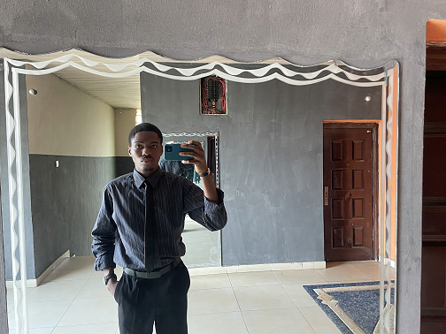

My name is Joshua Anorue, and I am a dedicated and aspiring web developer. I recently embarked on an exciting academic journey at Nnamdi Azikiwe University, where I aim to combine my passion for technology with a solid education to build a fulfilling career in tech.
Currently, I am focused on learning web development, starting with mastering HTML to establish a strong foundation. I believe in the power of structured growth and have dedicated myself to completing a personal project in HTML before progressing to more advanced aspects like CSS, JavaScript, and beyond.
I am enthusiastic about creating dynamic, user-friendly websites and applications that solve real-world problems. This portfolio showcases my early projects and reflects my commitment to learning, growing, and contributing to the ever-evolving field of web development.
Here is a picture of me:
